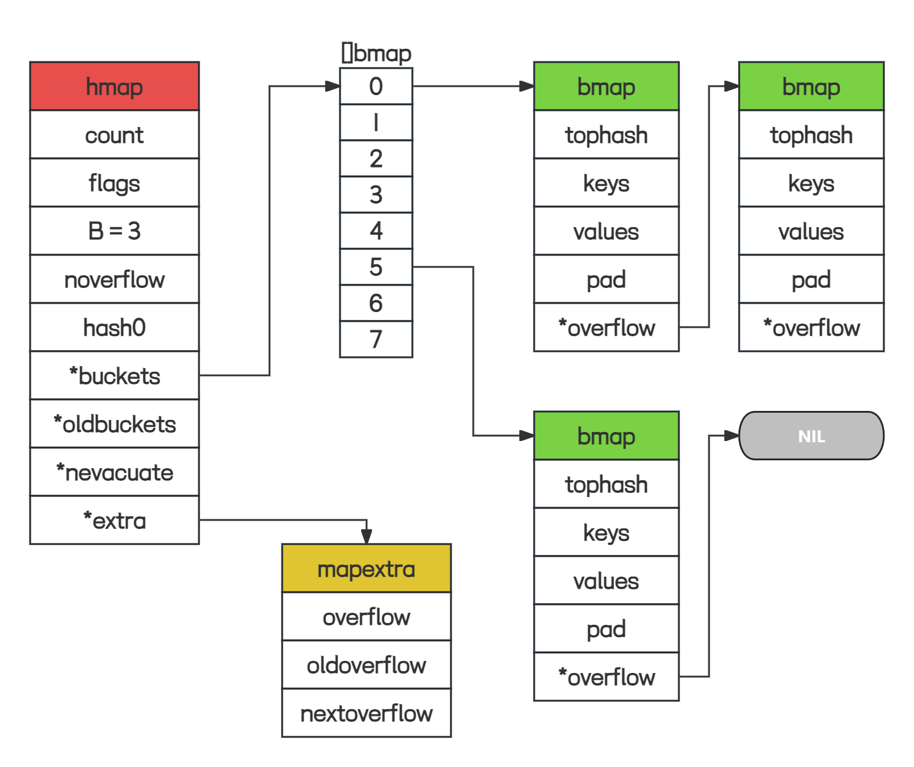
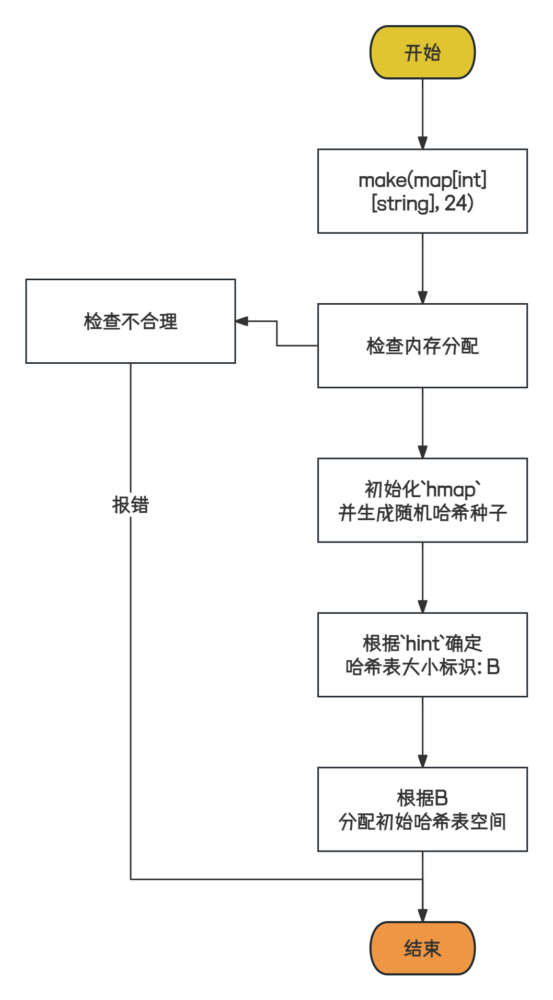

参考: 深入学习 golang 中 map 底层实现, Go Map底层实现原理
引言
Map是最见的数据结构, 其是无序键值对(key: value)的集合.本文将结合源码与图示对Go Map进行解读, 期望使得读者可以对Map数据结构&操作流程有一个清晰理解;
源码路径: go/src/runtime/map.go, 版本: go1.21.5, 环境: linux/amd64
数据结构
Go Map内部使用哈希表(Hash Table)实现, 通过HashFunc将Key映射到对应的桶Bucket中, 从而实现了快速的查找, 插入, 删除等操作; 如果出现了Hash Crash, 桶内通过链表数据结构处理;
由于源码中的数据结构较为复杂, 本部分将优先通过图示的方式展示数据结构.
图示
源码
上面的图示中, 有三个关键数据结构: hmap, bmap, mapextra, 下面将分别解释:
hmap
1 | type hmap struct { |
hmap时Go Map的底层数据结构, 其表示Hash Table的各项属性与信息, 比如存活的元素数量, 桶个数, 桶数组等.
bmap
bmap就是桶(bucket)的数据结构表示;
1 | type bmap struct { |
bucketCnt: 一个桶内可存储的key:value数量, 默认为8;tophash: 是一个uint8数组, 数组长度与桶数量一致,tophash[0]表示第一个key的哈希值hashValue = HashFunc[key0]的高8位, 查找key时可以提高效率.查找流程:
- 获得
key的哈希值hashValue := HashFunc(key); - 定位到桶序号: 通过低位
hashValue确定; - 遍历
tophash:将hashValue的高8位与tophash[i]比较:- 不同:
key不在此位置; - 相同: 再去比较
key是否相同
- 不同:
- 获得
Wait a Moment!!!, 既然是桶表示, 那么Key: Value本身去哪里了??? 这是由于Map的Key, Value类型均不固定, Go官方也没有通过interface{}的低效标识定义Key, Value字段.而是通过reflect, 在编译时, 推导出BucketType, 相关逻辑在 cmd/compile/internal/reflectdata.reflect.go:
1 | func MapBucketType(t *types.Type) *types.Type {...} |
编译推导后, bmap结构如下:
1 | type bmap struct { |
topbit: 与tophash作用基本一致, 高8位HashValue;keys:key的数组elems:value的数组overflow: 桶溢出指针, 不为nil说明存在溢出桶.
需要注意的时, key: value的存储形式是: key1, key2, ..., key8, value1, value2, ..., value8, 而不是key1, value1, ..., key8, value8. 这是因为内存对齐的的考量, 可以减少不必要的内存开销;
mapextra
上面推导的bmap.overflow并不总是uintptr类型, 在MapBucketType()中相关逻辑;
1 | otyp := types.Types[types.TUNSAFEPTR] |
可以看到, 如果Key, Value均不包含指针, 则为uintptr类型, 否则为unsafe.Pointer;差别在于:
uintptr: 不被GC视为引用;unsafe.Pointer: 被GC视为引用;
这样处理
- 的缘由为, 可以避免扫描整个map: 如果
key, value均不包含指针, 那么bucket就标识为不含指针(uintptr)类型. - 的缺点为, 如果
bucket存在溢出bucket, 此时overflow指向了溢出桶, 但是由于uintptr不被视为引用, 有可能被GC错误的回收掉. 为了避免此缺陷, 就需要引用此溢出桶, 也就是hmap.extra字段, 类型为*mapexta.
1 | type mapextra struct { |
通过mapextra结构体，GO语言实现了更高效的哈希表管理方式，让我们可以更好地处理溢出桶和优化内存利用。
操作流程
创建
日常在编码时, 会采用三种形式创建一个Map:
1 | map[int]string{1:"1", 2:"2"} // 字面量 |
相关创建函数有:
1 | makemap_small |
以下两种场景下会调用到makemap_small:
make(map[k]v): 不指定大小make(map[k]v, hint): 指定大小, 但是hint <= 8.8是一个桶内可以容纳的k:v数量.
其余的场景下均会调用到makemap函数, 那么我们以makemap函数为例介绍下, 创建流程;
源码:
1
2
3
4
5
6
7
8
9
10
11
12
13
14
15
16
17
18
19
20
21
22
23
24
25
26
27
28
29
30
31
32
33
34func makemap(t *maptype, hint int, h *hmap) *hmap {
mem, overflow := math.MulUintptr(uintptr(hint), t.Bucket.Size_)
if overflow || mem > maxAlloc {
hint = 0
}
// initialize Hmap
if h == nil {
h = new(hmap)
}
h.hash0 = fastrand()
// Find the size parameter B which will hold the requested # of elements.
// For hint < 0 overLoadFactor returns false since hint < bucketCnt.
B := uint8(0)
for overLoadFactor(hint, B) {
B++
}
h.B = B
// allocate initial hash table
// if B == 0, the buckets field is allocated lazily later (in mapassign)
// If hint is large zeroing this memory could take a while.
if h.B != 0 {
var nextOverflow *bmap
h.buckets, nextOverflow = makeBucketArray(t, h.B, nil)
if nextOverflow != nil {
h.extra = new(mapextra)
h.extra.nextOverflow = nextOverflow
}
}
return h
}图示:
解读:上面展示了
makemap函数的逻辑流程, 需要注意以下几点:B哈希表大小的确定过程: 传入hint并非真正的map大小, 岂会根据查找命中率, 效率, 内存的利用率等方面, 确定B的大小. 这里面的核心概念就是负载因子loadFactor,在Golang中为loadFactor = 哈希表中的元素个数/ 2^B. 负载因子过大, 那么溢出桶会过多, 查找效率变低. 负载因子过小, 浪费内存空间. 经过统计6.5的负载因子是最优解.1
2
3
4
5
6
7
8
9
10
11
12
13
14
15
16
17
18
19// Picking loadFactor: too large and we have lots of overflow
// buckets, too small and we waste a lot of space. I wrote
// a simple program to check some stats for different loads:
// (64-bit, 8 byte keys and elems)
// loadFactor %overflow bytes/entry hitprobe missprobe
// 4.00 2.13 20.77 3.00 4.00
// 4.50 4.05 17.30 3.25 4.50
// 5.00 6.85 14.77 3.50 5.00
// 5.50 10.55 12.94 3.75 5.50
// 6.00 15.27 11.67 4.00 6.00
// 6.50 20.90 10.79 4.25 6.50
// 7.00 27.14 10.15 4.50 7.00
// 7.50 34.03 9.73 4.75 7.50
// 8.00 41.10 9.40 5.00 8.00
//
// %overflow = percentage of buckets which have an overflow bucket
// bytes/entry = overhead bytes used per key/elem pair
// hitprobe = # of entries to check when looking up a present key
// missprobe = # of entries to check when looking up an absent key那么在
makemap函数中, 其优先将B初始化为0, 逐步自增B, 直到负载因子小于6.5, 这样就找到合适的B;1
2
3
4
5B := uint8(0)
for overLoadFactor(hint, B) {
B++
}
h.B = B桶空间的分配过程: 确定了
B之后, 就需要分配桶数组了. 如果B==0,那就不分配, 在写入时通过mapassign分配.1
2
3
4
5
6
7
8
9
10
11// allocate initial hash table
// if B == 0, the buckets field is allocated lazily later (in mapassign)
// If hint is large zeroing this memory could take a while.
if h.B != 0 {
var nextOverflow *bmap
h.buckets, nextOverflow = makeBucketArray(t, h.B, nil)
if nextOverflow != nil {
h.extra = new(mapextra)
h.extra.nextOverflow = nextOverflow
}
}在
makeBucketArray函数中, 处理了相关逻辑, 可以知道: 普通桶数组和溢出桶数组的内存是连续的，且 B 小于 4 时，不会分配溢出桶。综合负载因子的条件，当 hint 值小于2 ^ 3 * 6.5 = 52时，不会分配溢出桶。
哈希
Hash指的是将key值通过一系列的数学运算, 得到一个定长的值的过程. 本文采用的形式时: hashValue = HashFunc(key)来标识哈希值.
在Go中, hashValue被分为高位与低位;
- 低位用于确认桶序号: 例如
B==4时, 低4位视为低位, 用于确定桶序号, 例0011指三号桶; - 高位用于桶内
key值的快速比较:tophash;
说到tophash, 其有两个用处: 一个是上面提到的key值快速比较, 另一个是标识一些状态信息, 例如:
1 | // Possible tophash values. We reserve a few possibilities for special marks. |
emptyRest: 桶的当前位置与后面的位置与溢出桶都是空的. 在查找时, 那就是没匹配到, 在写入时, 可以直接写;emptyOne: 桶的当前位置是空的;evacuatedX, evacuatedY: 这两个状态和扩容有关系，建议结合扩容这一章一起看。在增量扩容模式下，桶数变成原来的 2 倍，前部分称为 X 区，后部分称为 Y 区，桶中的数据搬迁时可能会搬到 X 区，也可能会搬到 Y 区。搬迁后旧桶中的 tophash[i]就被置为evacuatedX或evacuatedY。
在遍历过程中，如果由于写操作导致了扩容，就能根据这个标记知道数据是否搬迁，如果没搬迁直接从旧桶中查找，否则需要根据evacuatedX或evacuatedY 确定元素的搬迁位置，在新桶中查找。
evacuatedEmpty: 和evacuatedX、evacuatedY类似，区别在于: 如果搬迁前该位置本来就没有数据，那么搬迁后tophash[i]就会被置为evacuatedEmpty。minTopHash: 该值规定了所有key高位哈希值的最小值，这样是为了避免某一个 key 的高位哈希值和上面 5 个值一样，导致无法区分是真实的key的高位哈希还是标记。实际情况中，高位哈希出现任何值都是可能的，因此如果某个
key的高位哈希小于minTopHash，则会在此基础上加上minTopHash作为其高位哈希，以保证不会小于minTopHash。1
2
3
4
5
6
7
8
9
10
11
12
13
14
15
16
17
18
19
20
21
22
23
24
25
26
27
28
29
30
31
32
33
34
35
36
37
38
39
40
41
42
43
44
45
46
47
48
49
50
51
52
53
54
55
56
57
58
59
60
61
62
63
64
65
66
67
68
69
70
71
72
73
74
75
76
77
78
79
80
81
82
83
84
85
86
87
88
89
90
91
92
93
94
95
96
97
98
99
100
101
102
103
104
105
106
107
108
109
110
111
112
113
114
115
116
117
118
119
120
121
122
123
124
125
126
127
128
129
130
131
132func tophash(hash uintptr) uint8 {
top := uint8(hash >> (goarch.PtrSize*8 - 8))
if top < minTopHash {
top += minTopHash
}
return top
}
### 写入
`map`的写入操作, 通过`m[k] = v`形式完成, 其源码层次调用了`mapassign`函数.
- 源码
```go
func mapassign(t *maptype, h *hmap, key unsafe.Pointer) unsafe.Pointer {
// map 判定是否初始化
if h == nil {
panic(plainError("assignment to entry in nil map"))
}
...
// 判定并发写
if h.flags&hashWriting != 0 {
fatal("concurrent map writes")
}
// 计算hash值
hash := t.Hasher(key, uintptr(h.hash0))
// 标识map在写操作
h.flags ^= hashWriting
// 如果没有桶分配的话, 初始化桶
if h.buckets == nil {
h.buckets = newobject(t.Bucket) // newarray(t.Bucket, 1)
}
again:
// 利用位运算获得桶位置
bucket := hash & bucketMask(h.B)
// map正在扩容, 则优先扩容
if h.growing() {
growWork(t, h, bucket)
}
// 拿到桶地址
b := (*bmap)(add(h.buckets, bucket*uintptr(t.BucketSize)))
// 计算高位hash
top := tophash(hash)
var inserti *uint8
var insertk unsafe.Pointer
var elem unsafe.Pointer
// 遍历桶
bucketloop:
for {
// 逐个遍历桶中的每个位置(一个桶有八个位置，对应 8 个k-v)
for i := uintptr(0); i < bucketCnt; i++ {
// 位置 i 保存的高位哈希与当前 key 的高位哈希不等，说明keys[i]与 key 不同
if b.tophash[i] != top {
// 虽然哈希值不等，但是tophash[i]保存的是状态哈希且该状态表明当前位置是空的，此时可以将 k-v 插入当前位置
if isEmpty(b.tophash[i]) && inserti == nil {
inserti = &b.tophash[i]
insertk = add(unsafe.Pointer(b), dataOffset+i*uintptr(t.KeySize))
elem = add(unsafe.Pointer(b), dataOffset+bucketCnt*uintptr(t.KeySize)+i*uintptr(t.ValueSize))
}
if b.tophash[i] == emptyRest {
break bucketloop
}
continue
}
// 位置 i 保存的高位哈希与当前 key 的高位哈希相等，但是 key 不一定相等(可能有哈希冲突)，还需要进一步比较 key
k := add(unsafe.Pointer(b), dataOffset+i*uintptr(t.KeySize))
if t.IndirectKey() {
k = *((*unsafe.Pointer)(k))
}
// 虽然高位哈希相等，但是 key 不相等，但是由于此处已经有别的 key 存在，所以不能直接插在此处
if !t.Key.Equal(key, k) {
continue
}
// 到这里说明找到了 key 在桶中的位置
if t.NeedKeyUpdate() {
typedmemmove(t.Key, k, key)
}
// 定位到目标 value 应该存放的地址
elem = add(unsafe.Pointer(b), dataOffset+bucketCnt*uintptr(t.KeySize)+i*uintptr(t.ValueSize))
goto done
}
// 遍历完都没找到合适的位置，那就继续遍历当前桶的溢出桶(通过当前桶的overflow字段)
ovf := b.overflow(t)
if ovf == nil {
break
}
b = ovf
}
// 负载因子过高或有太多的溢出桶，且当前没有进行扩容，那么就执行扩容，然后重试前面的操作
if !h.growing() && (overLoadFactor(h.count+1, h.B) || tooManyOverflowBuckets(h.noverflow, h.B)) {
hashGrow(t, h)
goto again // Growing the table invalidates everything, so try again
}
if inserti == nil {
// The current bucket and all the overflow buckets connected to it are full, allocate a new one.
newb := h.newoverflow(t, b)
inserti = &newb.tophash[0]
insertk = add(unsafe.Pointer(newb), dataOffset)
elem = add(insertk, bucketCnt*uintptr(t.KeySize))
}
// store new key/elem at insert position
if t.IndirectKey() {
kmem := newobject(t.Key)
*(*unsafe.Pointer)(insertk) = kmem
insertk = kmem
}
if t.IndirectElem() {
vmem := newobject(t.Elem)
*(*unsafe.Pointer)(elem) = vmem
}
typedmemmove(t.Key, insertk, key)
*inserti = top
h.count++
done:
if h.flags&hashWriting == 0 {
fatal("concurrent map writes")
}
// 还原标记，表示写入完成
h.flags &^= hashWriting
if t.IndirectElem() {
elem = *((*unsafe.Pointer)(elem))
}
return elem
}
上面的源码中, 通过注释的方式, 基本解释了
map写入的过程, 这一段逻辑较长, 建议结合源码多次阅读, 方可有较深的理解;解读:
对于常见的点, 解释逻辑:
map未初始化, 使用则报错panic:1
2
3if h == nil {
panic(plainError("assignment to entry in nil map"))
}函数一开始就进行了
nil判定;map并发不安全:1
2
3
4
5
6
7
8
9
10
11
12
13
14func mapassign(t *maptype, h *hmap, key unsafe.Pointer) unsafe.Pointer {
...
// 判定并发写
if h.flags&hashWriting != 0 {
fatal("concurrent map writes")
}
// ---------------
// 计算hash值
hash := t.Hasher(key, uintptr(h.hash0))
// 标识map在写操作
h.flags ^= hashWriting
...
}上面的逻辑可以发现, 其并没有使用
mutex, 如果两个协程同时通过了并发写判定逻辑if h.flags&hashWriting != 0, 随后均进行写逻辑, 那么写的结果就无法预测的, 所以说map并发不安全;buckets桶数组空间可以在写入的时候创建:1
2
3if h.buckets == nil {
h.buckets = newobject(t.Bucket) // newarray(t.Bucket, 1)
}如果说使用了
make(map[k]v)不指定大小的方式, 那么buckets在第一次写时进行创建操作;写入操作, 有可能引发扩容操作:
1
2
3
4
5
6// 负载因子过高或有太多的溢出桶，且当前没有进行扩容，那么就执行扩容，然后重试前面的操作
if !h.growing() && (overLoadFactor(h.count+1, h.B) || tooManyOverflowBuckets(h.noverflow, h.B)) {
hashGrow(t, h)
goto again // Growing the table invalidates everything, so try again
}
- 负载因子过大与溢出桶过多都是引发扩容的原因;
图示
map写入核心逻辑图示:
上图展示了
KEY4的Map匹配流程- 首先通过
HashFunc获得了KEY4的HashValue: 0011 1011 ... 0000; - 获得高位:
0011 1011, 低位:0000 - 通过低位确定
bucket序号为:0, 随后遍历buckets[0]内的tophash - 通过高位与
tophash[i]的值进行比较, 图中在第四次匹配时, 发现tophash值一致, 并且发现对应的keys[3]值恰好也是KEY4, 说明匹配成功了:- 如果写: 那么更新写入
values[3] - 如果读: 那么读取
values[3]
- 如果写: 那么更新写入
- 首先通过
读取
读取操作, 用户可以有两种方式出发:
1 | v := map[k] |
对应的内部函数分别为:
1 | func mapaccess1(t *maptype, h *hmap, key unsafe.Pointer) unsafe.Pointer {...} |
两个函数逻辑基本一致, 我们已mapaccess1为例:
源码
1
2
3
4
5
6
7
8
9
10func mapaccess1(t *maptype, h *hmap, key unsafe.Pointer) unsafe.Pointer {
...
if h == nil || h.count == 0 {
if t.HashMightPanic() {
t.Hasher(key, 0) // see issue 23734
}
return unsafe.Pointer(&zeroVal[0])
}
...
}在读操作中, 如果
map未初始化, 或者说map中当前没有元素的话, 则返回对应value的零值;例如:
1
2
3
4
5func main() {
var m map[string]int
v := m["QingZhi"]
fmt.Println(v)
}1
2
3
4
5func main() {
m := make(map[string]int)
v := m["QingZhi"]
fmt.Println(v)
}1
2
3
4
5
6func main() {
m := make(map[string]int)
m["SUN"] = 1
v := m["QingZhi"]
fmt.Println(v)
}三个函数均输出
0;1
2
3if h.flags&hashWriting != 0 {
fatal("concurrent map read and map write")
}随后进行了并发读写的判定, 可以发现读时写也会报错;
后面的逻辑基本与写一致, 这里不重复了;
删除
用户可以通过delete关键字, 删除map中某个key: value; Go语言内部通过func mapdelete(t *maptype, h *hmap, key unsafe.Pointer) {}函数处理;
源码: 通过阅读代码, 我们可以发现, 其余读写逻辑基本上也是一致的, 都有map初始化的判定, map并发写的的判定逻辑, hashValue高低位的桶定位逻辑, 溢出桶的查找等; 这里不重复, 仅介绍下不一样的地方:
删除逻辑:
1
2
3
4
5
6
7
8
9
10
11
12
13
14
15
16b.tophash[i] = emptyOne
// If the bucket now ends in a bunch of emptyOne states,
// change those to emptyRest states.
// It would be nice to make this a separate function, but
// for loops are not currently inlineable.
if i == bucketCnt-1 {
if b.overflow(t) != nil && b.overflow(t).tophash[0] != emptyRest {
goto notLast
}
} else {
if b.tophash[i+1] != emptyRest {
goto notLast
}
}
for {
b.tophash[i] = emptyRest使用
delete删除key时，并没有真的将保存key-value的内存清空，而是直接将tophash[i]置为特定的状态标记(emptyOne 或 emptyRest)，以表明该位置是空的。当然，如果
key或value中含有指针，还需要将指针置为nil，以保证删除的key和value可以被GC回收掉。1
2
3
4
5
6
7
8
9
10
11
12
13
14
15
16
17
18
19for ; b != nil; b = b.overflow(t) {
for i := uintptr(0); i < bucketCnt; i++ {
...
// 如果 key 中含有指针，将指针置空，以保证可以被 GC 清理掉
if t.indirectkey() {
*(*unsafe.Pointer)(k) = nil
} else if t.key.ptrdata != 0 {
memclrHasPointers(k, t.key.size)
}
// 如果 value 中含有指针，将指针置空，以保证可以被 GC 清理掉
e := add(unsafe.Pointer(b), dataOffset+bucketCnt*uintptr(t.keysize)+i*uintptr(t.elemsize))
if t.indirectelem() {
*(*unsafe.Pointer)(e) = nil
} else if t.elem.ptrdata != 0 {
memclrHasPointers(e, t.elem.size)
} else {
memclrNoHeapPointers(e, t.elem.size)
}
...清空
用户清空一个map有两种方式:
- 创建新的
map并赋值给原本的map变量，原本的map会被GC掉 - 通过循环 +
delete删除
方式一会创建新的map，不够干净，且上一个 map 分配的空间无法重用；直观上，方式二迭代+删除会比较慢。
而实际上，编译器会对迭代 + 删除这种方式进行优化，在源码层面对应下面的函数，其主要思路就是: 将map 中的各种标记清空、将桶数组和溢出桶的内存清零并复用
扩容
如果负载因子过高或者 map 中溢出桶过多，会触发扩容。Go 将扩容分成两种:
- 等量扩容
- 增量扩容
负载因子的计算和桶的数量(即 B)有关，因此如果负载因子过大，则说明B过小，此时需要将 B 加 1，对应的桶数变成了原来的 2 倍，这就是增量扩容；
- 等量扩容模式下，桶数量不变，掩码和扩容前是一致的，因此扩容前后 key 所在的桶序号不变
- 增量扩容模式下，桶数量变成原来的 2倍，掩码也比之前多了 1 位，key 所在的桶序号可能会改变。比如原本的 B 是 5，计算位置时只需取 key 的低位哈希后 5 位，而增量扩容后B是 6，计算位置时需取 key 的低位哈希后 6位。桶序号是否改变取决于 key 的低位哈希的倒数第 6 位是 0 还是 1
注意细节:
hmap结构中有一个oldbuckets吗，扩容刚发生时，会先将老数据存到这个里面。- 每次对
map进行删改操作时，会触发从oldbucket中迁移到bucket的操作【非一次性，分多次】 - 在扩容没有完全迁移完成之前，每次get或者put遍历数据时，都会先遍历
oldbuckets，然后再遍历buckets。
结论
通过上述分析，不难得出以下结论:
- 创建
map时尽量指定hint的大小，避免后续带来的扩容问题 - 如果
k-v能用不含指针的类型，就尽量不用指针，可以减轻 GC 压力 - 使用
delete删除map中的key时不会真的释放内存，只是做个标记 map不是并发安全的map本质上是使用了拉链法去解决哈希冲突问题，区别在于链上的每个节点可以保存 8 个k-v